or: four men, one beach, zero swimming skills
it started, as most disasters do, with sylus.
"beach day," he said. "this weekend."
rafayel said he was a marine expert. (he was not.)
this is what happened next.
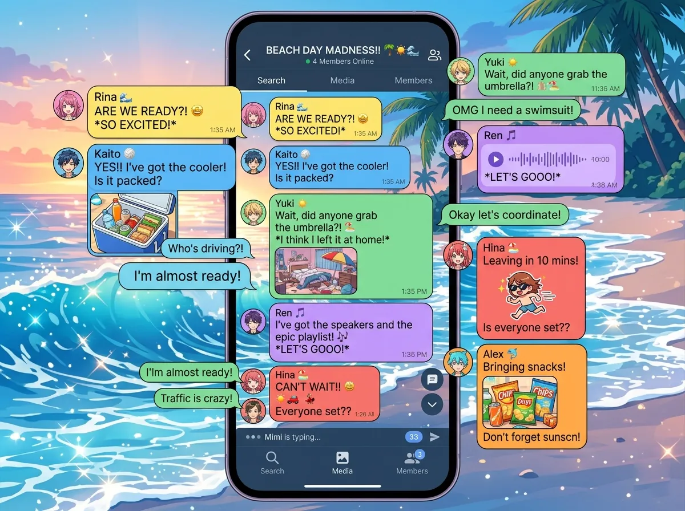
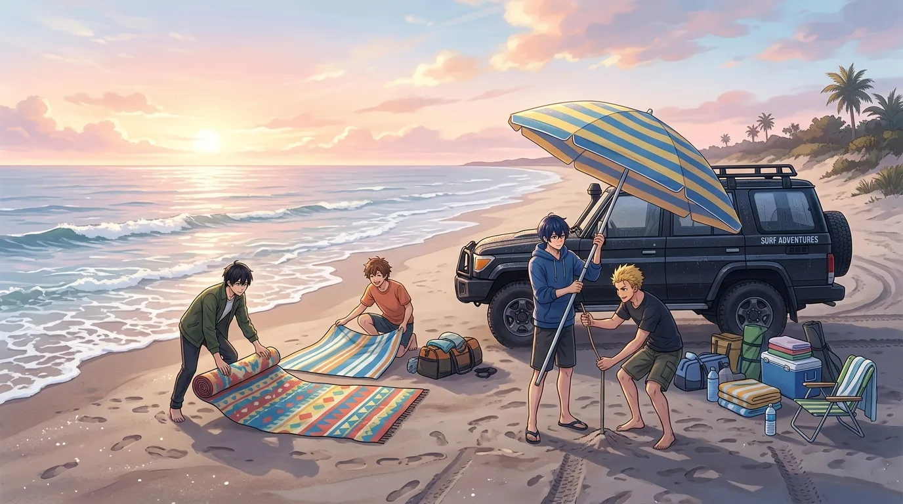
sylus arrived first. black SUV. black beach umbrella. black towel.
he stood at the water's edge. watching the waves. like he was assessing a threat.
(he was.)
zayne arrived second. carrying a large cooler. a beach chair. a bag that looked suspiciously like a medical kit.
"you brought a cooler?" asked sylus.
"hydration is important."
"it's the size of a small car."
"i like options."
rafayel arrived third. shirtless. sunglasses. carrying a beach ball.
"you brought a beach ball," said zayne.
"i'm festive."
"you're going to get sunburned."
"i told you. i'm aquatic."
zayne sighed. applied sunscreen to himself. (SPF 100.)
xavier arrived fourth. thirty minutes late. carrying a blanket and a pillow.
"you brought a pillow," said rafayel.
"beach naps require proper neck support."
"we haven't even set up."
"i'm setting up now."
xavier laid out his blanket. placed the pillow. lay down. closed his eyes.
"xavier, no," said rafayel.
"xavier, yes."
he was asleep in thirty seconds.
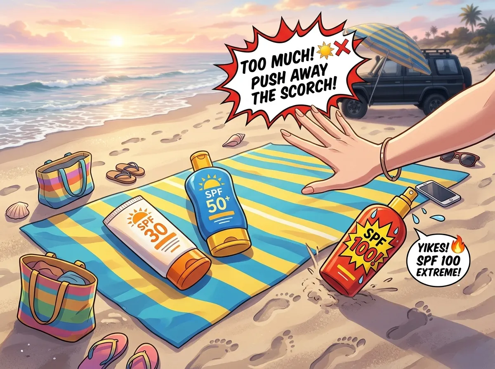
zayne unpacked his sunscreen collection. SPF 30. SPF 50. SPF 100. Sport formula. Baby formula. Reef-safe.
"you have a problem," said rafayel.
"skin cancer is the problem. this is the solution."
zayne handed rafayel a bottle. rafayel pushed it away.
"i don't need it."
"you're pale."
"i'm luminescent."
"you're going to burn."
"i'll be fine."
sylus took a bottle. applied it methodically. every inch of exposed skin.
rafayel stared. "you're using sunscreen?"
"i'm not an idiot."
"you're sylus."
"same thing."
zayne walked over to xavier. xavier was still asleep. zayne applied sunscreen to xavier's arms and legs.
xavier didn't wake up.
"that's... impressive," said rafayel.
"he's trained," said zayne.
zayne applied sunscreen to xavier's face. xavier smiled in his sleep.
"he's dreaming about something," said rafayel.
"probably snacks."
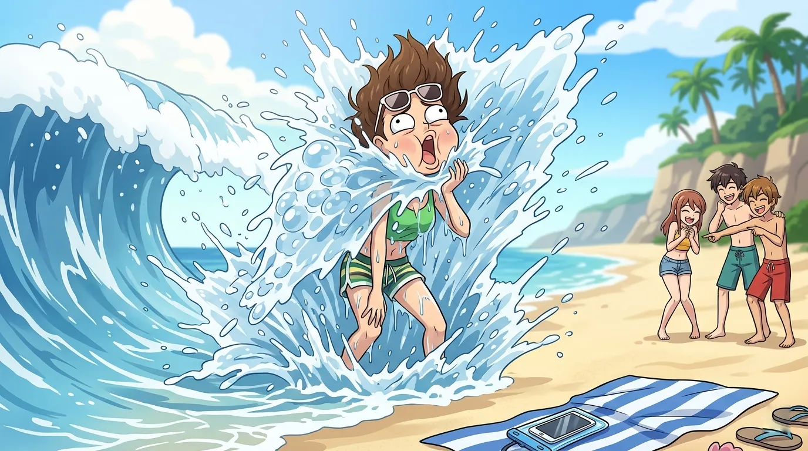
rafayel ran toward the water. arms wide. shouting something about being a child of the sea.
a wave hit him. he fell. face-first.
zayne didn't move. "that happened."
sylus didn't move. "i saw."
rafayel stood up. coughing. saltwater in his nose.
"that wave was... aggressive."
"waves are not aggressive," said zayne. "they're waves."
"this one had a personal vendetta."
rafayel tried again. waded in slowly this time. got to waist depth. turned around to wave at them.
another wave hit him from behind. he disappeared for a moment. resurfaced. sputtering.
"are you okay?" called zayne.
"I'M FINE"
"you're not fine."
rafayel walked back to shore. defeated. dripping. dignity gone.
"the ocean is mean," he said.
"the ocean doesn't have feelings."
"it has feelings. they're just all directed at me."
sylus handed him a towel. didn't say anything. (the towel was black, of course.)
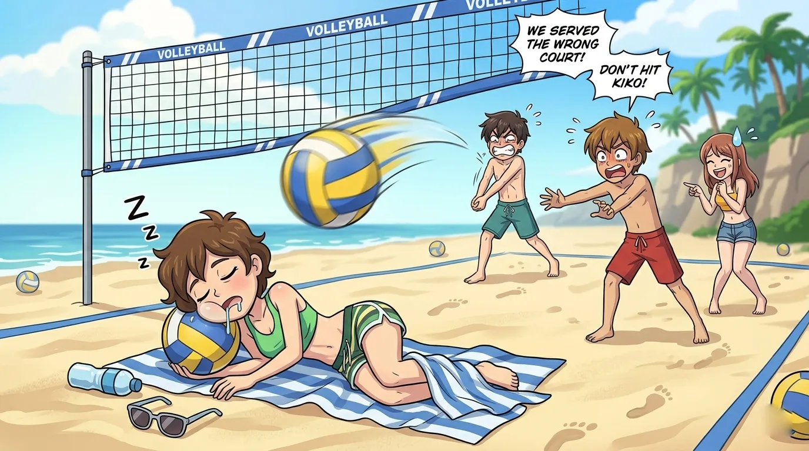
"let's play volleyball," said rafayel, who had forgotten about the ocean.
"no," said sylus.
"why not"
"because you'll get hurt."
"i won't."
"you fell in the ocean."
"that was different."
they set up the net anyway. (sylus set it up. perfectly. like he'd done it before.)
teams: sylus and zayne vs rafayel and xavier.
xavier was still asleep.
"xavier," said rafayel, shaking him. "wake up. we're playing volleyball."
xavier opened one eye. "no."
"yes."
"i'm the designated napper."
"you're my teammate."
xavier sat up. stretched. walked to the court. stood there. didn't move.
the game started. sylus served. the ball flew past rafayel's head. rafayel didn't move.
"you have to hit it," said zayne.
"i was... assessing."
sylus served again. rafayel tried to hit it. missed. fell in the sand.
xavier sat down on the court. "i'm tired."
"the game started thirty seconds ago," said rafayel.
"i know."
sylus walked over. "this is over."
"we didn't even finish one point," said rafayel.
"that's how over it is."
they took down the net. (sylus took it down. perfectly.)
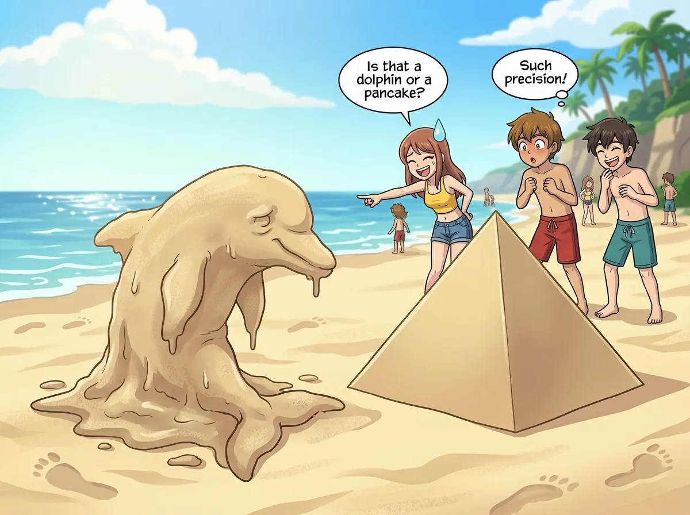
rafayel decided to build a sand sculpture. "i'm an artist. this will be easy."
it was not easy.
he built something that looked like a melted dolphin.
"what is that," asked zayne.
"art."
"it's a lump."
"a LUMPY dolphin."
zayne walked away. came back with a bucket and a small shovel. started building.
ten minutes later, he had built a perfect geometric pyramid.
"that's... actually impressive," said rafayel.
"i'm a surgeon. precision is required."
"it's sand."
"precision is always required."
sylus walked over. looked at the pyramid. looked at rafayel's lumpy dolphin. said nothing.
his silence was louder than words.
xavier, still on his blanket, opened one eye. "the dolphin looks like it's melting."
"it's SUPPOSED to look like that."
"okay." xavier closed his eye.
a wave came up. washed away both sculptures.
"THE OCEAN HATES ME," shouted rafayel.
"the ocean doesn't hate you," said zayne. "it's just indifferent."
"that's worse."
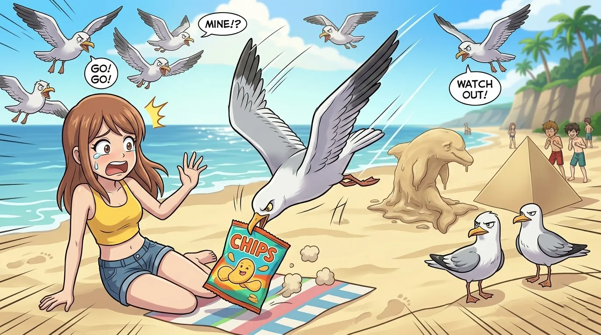
zayne unpacked snacks from the cooler. sandwiches. fruit. water.
a seagull landed three feet away. stared.
"don't," said zayne to the seagull.
the seagull stared harder.
rafayel opened a bag of chips. another seagull appeared.
then another. then five more.
"they're organizing," said rafayel.
"seagulls don't organize," said zayne.
one seagull dive-bombed the chips. rafayel screamed. dropped the bag.
the seagulls attacked.
sylus sat still. didn't move. the seagulls avoided him. (they knew.)
zayne covered the food. waved his arms. "go away."
the seagulls did not go away.
xavier was still asleep. a seagull landed on his back. xavier didn't move.
"how is he still asleep," shouted rafayel.
"i told you. he's trained."
sylus stood up. walked toward the seagulls. they scattered.
"how did you do that," asked rafayel.
"they know better."
rafayel looked at sylus. "you're terrifying."
"i know."
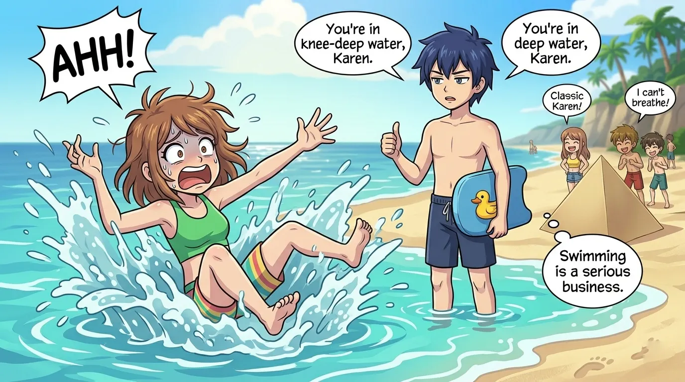
rafayel decided he wanted to learn how to swim properly.
"sylus, teach me."
"no."
"why not"
"because you'll panic."
"i won't."
"you panicked in waist-deep water."
"that was different."
sylus sighed. walked into the water. rafayel followed.
"lie on your back," said sylus.
rafayel tried. sank immediately.
"THAT'S NOT FLOATING"
"you need to relax."
"I AM RELAXED"
zayne watched from shore. "this is going poorly."
"it's entertaining," said xavier, who had woken up for the snacks.
sylus grabbed rafayel's arm. pulled him up. "try again."
rafayel tried again. floated for three seconds. then panicked.
"i'm done."
"we've been in the water for four minutes."
"i'm emotionally exhausted."
rafayel walked back to shore. sat on the sand. stared at the ocean.
"the ocean wins," he said.
"the ocean always wins," said zayne.
sylus stayed in the water. swam out. effortlessly. like he belonged there.
"show off," muttered rafayel.
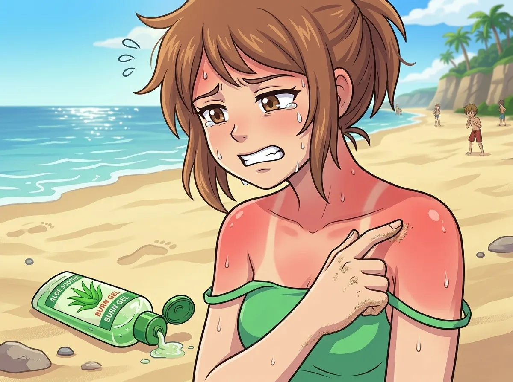
hours later, rafayel's shoulders were pink. then red. then very red.
"you're sunburned," said zayne.
"i'm not."
"you're the color of a tomato."
"i'm... rosy."
zayne handed him aloe vera. rafayel took it. applied it. winced.
"does it hurt?" asked xavier.
"no."
"you're wincing."
"i'm expressing."
sylus looked at rafayel's shoulders. "you should have worn sunscreen."
"you sound like zayne."
"zayne is correct."
"that's the worst thing you've ever said to me."
zayne smiled. (rare. terrifying.)
rafayel put on a shirt. the shirt touched his shoulders. he winced again.
"i'm never going outside again."
"you said that last time."
"i mean it this time."
he didn't mean it. (they all knew.)
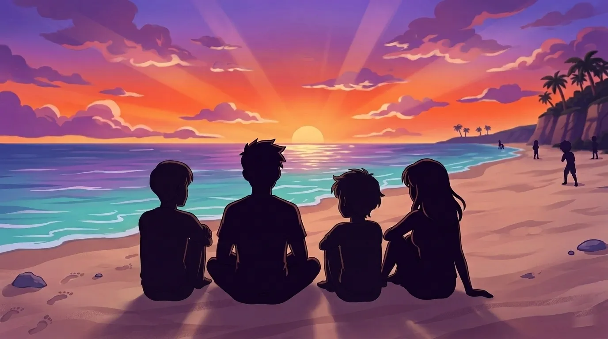
the sun began to set. the sky turned orange. then purple. then pink.
"it's beautiful," said rafayel.
"the ocean is calmer now," said zayne.
"the ocean is always calm at sunset."
"that's not scientifically accurate."
"let me have this."
sylus stood at the water's edge. hands in his pockets. watching the horizon.
xavier sat on his blanket. actually awake. looking at the sky.
"i haven't seen a sunset in..." he didn't finish.
"in a long time," said rafayel.
"yeah."
they sat in silence. four men. one beach. one sunset.
"today wasn't terrible," said rafayel.
"you got sunburned," said zayne.
"and attacked by seagulls."
"and knocked over by waves."
"still not terrible."
sylus didn't say anything. but he didn't disagree.
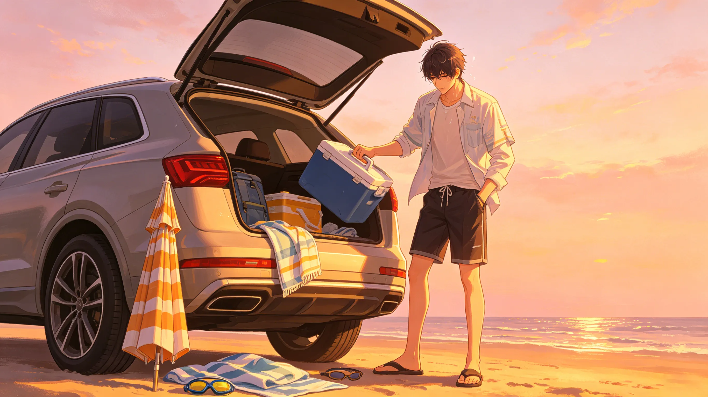
they packed up as the light faded. sylus folded the umbrella perfectly. zayne wiped down the cooler. xavier folded his blanket. (poorly. but he tried.)
rafayel carried the beach ball. deflated. like his ego.
"same time next week?" he asked.
"no," said sylus.
"same time next month?"
"maybe."
"that's not a no."
"it's not a yes either."
"i'll take it."
they got in the car. xavier fell asleep before they left the parking lot.
"he didn't even wait," said rafayel.
"that's a new record," said zayne.
sylus started the engine. "next time, bring sunscreen."
rafayel looked at his red shoulders. "fine."
the car pulled away. the beach grew small in the rearview mirror.
the ocean watched them go. indifferent as always.